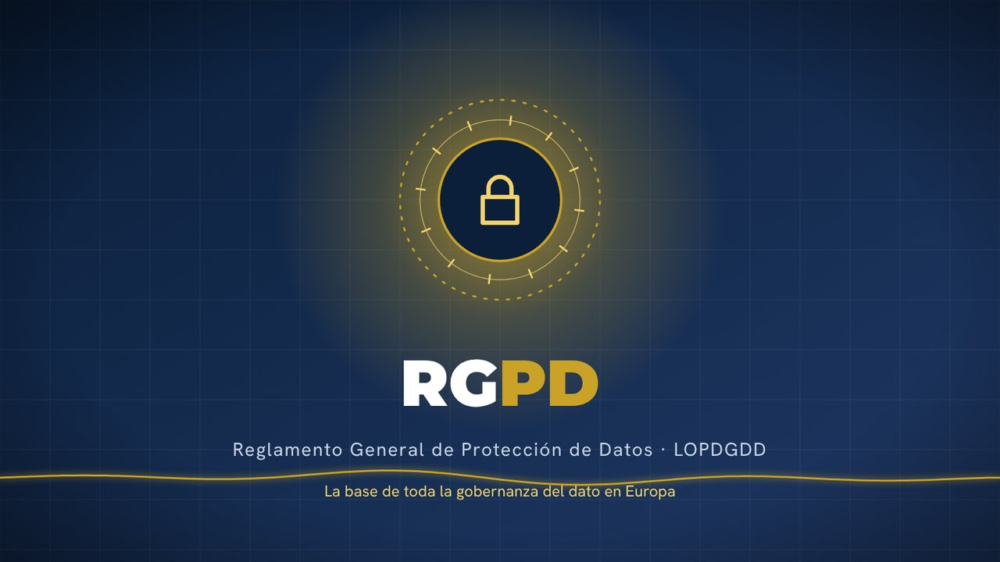

ARG
ARGARGOS › Normativa en 4 minutos › RGPD y LOPDGDD
El RGPD y la LOPDGDD en 4 minutos: qué exigen hoy y qué se sanciona en España
El Reglamento General de Protección de Datos se aplica desde 2018 y sus multas llegan a 20 millones de euros o el 4 % de la facturación mundial. En España, lo que más se sanciona no es lo exótico sino lo básico. Aquí tienes qué exige hoy, qué cambiaría el Ómnibus Digital y qué hacer ya.

- 0:00Pequeños descuidos
- 0:18Las multas
- 0:45Lo que se sanciona
- 1:05RGPD
- 1:17Qué exige
- 1:41El Ómnibus
- 2:08Fechas
- 2:33La cadena
- 2:55En España
- 3:20Qué hacer
Datos clave
- Multas de hasta 20 millones de euros o el 4 % de la facturación mundial.
- 30.931 reclamaciones recibió la AEPD en 2025, un 64 % más que el año anterior.
- Casi el 40 % de las sanciones en España tuvieron que ver con brechas de seguridad.
- 72 horas para notificar una brecha a la autoridad de control.
- Ómnibus Digital: propuesta todavía en negociación; hoy se cumple el RGPD tal como está.
- Más de 126.000 delegados de protección de datos comunicados en España.
- 1 de enero de 2026: entra en vigor el nuevo reglamento procesal para casos transfronterizos, aplicable a los casos nuevos desde el 2 de abril de 2027.
- Cada eslabón responde: fabricante (privacidad desde el diseño), mayorista, integrador como encargado y cliente final como responsable.
Transcripción
Texto completo de la locución
0:00 · Pequeños descuidos
Un correo enviado al destinatario equivocado, una copia de seguridad que nadie borró, un proveedor que guarda datos fuera de Europa, pequeños descuidos que parecen inofensivos, hasta que llega la reclamación.
0:18 · Las multas
El Reglamento General de Protección de Datos se aplica desde 2018 y sus multas pueden llegar a 20 millones de euros o al 4% de la facturación mundial. En España, la Agencia Española de Protección de Datos recibió en 2025 30.931 reclamaciones, un 64% más que el año anterior, y las brechas de seguridad supusieron casi el 40% de las sanciones.
0:45 · Lo que se sanciona
Lo que más se sanciona no es lo exótico, es lo básico, tratamientos sin una base jurídica clara, un registro de actividades que no refleja la realidad, datos que se conservan más de lo necesario, encargados y subencargados sin control, y medidas de seguridad que solo existen en el papel.
1:05 · RGPD
El RGPD, junto a la Ley Orgánica de Protección de Datos, es la base de toda la gobernanza del dato en Europa. No basta con declarar que se cumple, hay que poder demostrarlo.
1:17 · Qué exige
¿Qué exige hoy? Una base jurídica y transparencia para cada tratamiento, registro de actividades y evaluación de impacto cuando hay alto riesgo, privacidad desde el diseño y un contrato con cada encargado, y notificar las brechas a la autoridad en 72 horas. Las transferencias fuera del espacio económico europeo, siempre con garantías.
1:41 · El Ómnibus
Y lo que viene, el Ómnibus Digital, una propuesta de la Comisión todavía en negociación. Tocaría el concepto de dato personal, aunque las autoridades y el Consejo lo frenan. Reconocería el interés legítimo para desarrollar inteligencia artificial, con garantías, y obligaría a notificar solo las brechas de alto riesgo, en 96 horas. Pero no es ley, hoy se cumple el RGPD tal como está.
2:08 · Fechas
Fechas que conviene tener presentes. 25 de mayo de 2018, el RGPD empieza a aplicarse. 1 de enero de 2026, entra en vigor el nuevo reglamento procesal. 2 de abril de 2027, se aplica a los casos transfronterizos nuevos. Y finales de 2027, el objetivo para cerrar la simplificación.
2:33 · La cadena
Cada eslabón de la cadena tiene su papel. El fabricante, privacidad desde el diseño. El mayorista, contratos de encargo en el soporte y los servicios. El integrador, como encargado. Medidas, subencargados y transferencias. Y el cliente final, como responsable. Bases jurídicas, registro y evaluaciones de impacto.
2:55 · En España
En España hay más de 126.000 delegados de protección de datos comunicados. La agencia pone el foco en la inteligencia artificial, también en la agéntica, y prepara con la Comisión y el Comité Europeo una guía conjunta del RGPD y el Reglamento de IA. Muchas de sus actuaciones empiezan por una brecha y acaban revisando toda la gestión de la protección de datos.
3:20 · Qué hacer
¿Qué hacer ya? Cumplir el RGPD actual, tener listo el procedimiento de brechas y documentar la base jurídica del entrenamiento de la inteligencia artificial. ARGOS lo verifica con pruebas, no con declaraciones. Un registro de actividades real, evaluaciones de impacto y la evidencia de cada medida dentro de su perímetro. RGPD, cumplir es poder demostrarlo.
Preguntas frecuentes
¿Cuál es la multa máxima del RGPD?
Hasta 20 millones de euros o el 4 % de la facturación mundial anual, la cifra que sea mayor.
¿Qué es lo que más sanciona la AEPD?
Lo básico: tratamientos sin una base jurídica clara, registros de actividades que no reflejan la realidad, datos conservados más de lo necesario, encargados y subencargados sin control y medidas de seguridad que solo existen en el papel. Muchas actuaciones empiezan por una brecha y acaban revisando toda la gestión de la protección de datos.
¿En cuánto tiempo hay que notificar una brecha de seguridad?
En 72 horas a la autoridad de control. El Ómnibus Digital propone notificar solo las brechas de alto riesgo y en 96 horas, pero es una propuesta en negociación y no es ley.
¿Qué cambiaría el Ómnibus Digital en el RGPD?
Tocaría el concepto de dato personal, reconocería el interés legítimo para desarrollar inteligencia artificial con garantías y cambiaría la notificación de brechas. Las autoridades y el Consejo frenan parte de los cambios; mientras no se apruebe, se aplica el RGPD vigente.
¿Qué debe hacer ya una empresa?
Cumplir el RGPD actual, tener listo el procedimiento de brechas y documentar la base jurídica del entrenamiento de sistemas de inteligencia artificial, con un registro de actividades que refleje la realidad y evaluaciones de impacto cuando haya alto riesgo.
Fuentes oficiales
- Reglamento (UE) 2016/679, Reglamento General de Protección de Datos (EUR-Lex)
- Ley Orgánica 3/2018, de Protección de Datos Personales y garantía de los derechos digitales (BOE)
- Agencia Española de Protección de Datos
Sigue con
 EHDS
EHDSEl EHDS en 4 minutos: qué cambia el Espacio Europeo de Datos Sanitarios para hospitales y empresas de salud
 Reglamento de IA
Reglamento de IAEl Reglamento de IA en 4 minutos: niveles de riesgo, fechas tras el Ómnibus y qué hacer en España
 Data Act y DGA
Data Act y DGAEl Data Act y la DGA en 4 minutos: de quién son los datos de los productos conectados
Locución y música generadas con inteligencia artificial (art. 50 del Reglamento de IA). Información general, no constituye asesoramiento jurídico; situación a noviembre de 2026, según las fichas de regulación de Software in a Box. Clips de vídeo con licencia de Envato.
Para incrustar esta presentación en otra web: <iframe src="https://argos.softwareinabox.eu/normativa/rgpd-lopdgdd/presentacion/?embed=1" width="960" height="540" allow="autoplay; fullscreen" title="El RGPD y la LOPDGDD en 4 minutos: qué exigen hoy y qué se sanciona en España"></iframe> con un enlace a esta página.